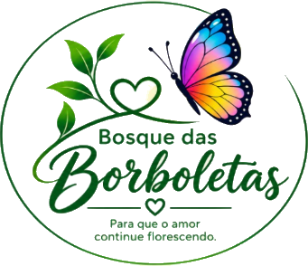

O ipê
Simboliza a vida. Cresce devagar, cria raízes fundas e, a cada primavera, floresce de novo.

Bosque das BorboletasUm bosque de ipês em Bagé, plantado em memória dos filhos que partiram.
O projeto
Quando um filho perde os pais, existe uma palavra para definir essa pessoa: órfão. Mas e quando uma mãe ou um pai perde um filho? Que palavra consegue traduzir uma dor tão grande?
O Bosque das Borboletas nasce para que esses filhos continuem presentes na vida de suas famílias e na memória da nossa comunidade. Cada ipê plantado é uma homenagem, que transforma a saudade em raízes e a memória em vida.
Um lugar de acolhimento, de silêncio, de refúgio e de memória. Um lugar onde os pais poderão caminhar sob as sombras dos sonhos de seus filhos, encontrar um pouco de paz e sentir que não estão sozinhos.
O vento não se pode ver, mas a gente pode sentir.
O significado
Simboliza a vida. Cresce devagar, cria raízes fundas e, a cada primavera, floresce de novo.
Representa transformação, mudança e renascimento. O amor não termina, apenas muda de forma.
Além do bosque, o projeto quer formar uma rede de apoio às famílias enlutadas, com profissionais especializados em luto.
Plantios
7 de novembro de 2026
Mais de 20 famílias plantaram as primeiras mudas de ipê.
realizado28 de novembro de 2026 · 10h
Em homenagem aos filhos de 40 famílias. Aberto a toda a comunidade.
Parque do GaúchoPlantar é só o começo
A homenagem não termina no dia do plantio. Ela continua em cada rega, em cada visita e em cada novo broto que surgir.
Quando uma família escolhe plantar seu ipê, também assume um gesto de carinho e compromisso: cuidar dessa árvore e zelar pelo nosso bosque. Assim como o amor, uma árvore precisa de água, cuidado e presença.
Como ajudar
Mudas de ipê garantem a continuidade do projeto e novos plantios.
Quero doarAjude na organização dos plantios, no cuidado das árvores e na divulgação.
Quero participarPsicólogos e profissionais da assistência social para o acolhimento das famílias.
Quero contribuirPerdeu um filho e quer participar dos próximos plantios, ou só conversar? Fale com a gente, no seu tempo.
Conversar